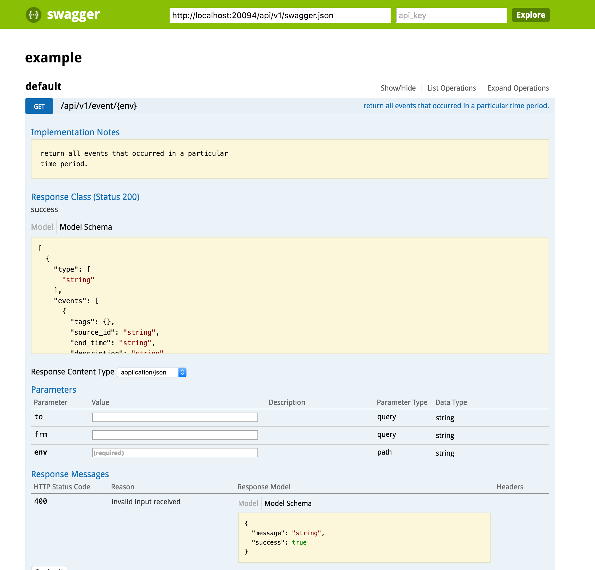

Introducing transmute-core: quickly create documented, input validating APIs for any web framework
A majority of my career has been spent on building web services in Python. Specifically, internal ones that have minimal or no UIs, and speak REST (or at least are rest-ish).
With each new service, I found myself re-implementing work to make user-friendly REST APIs:
- validation of incoming data, and descriptive errors when a field does not match the type or is otherwise invalid.
- documenting said schema, providing UIs or wiki pages allowing users to understand what the API provides.
- handling serialization to and from multiple content types (json, yaml)
This is maddening work to do over and over again, and details are often missed: sometimes yaml is not supported for a particular API, or there is a specific field that is not validated. Someone will ask about an API that you changed, and forgot to document a new parameter. It's hard to scale API maintenance when you're dealing with forgetting some minute boilerplate.
This was further exacerbated by using different web frameworks for different projects. Every framework provides their own REST plugin or library, and often there's a lack of functional parity, or declaring an API is completely different and requires learning multiple approaches.
So with this monumental pain, what if I told you can get an API that:
- validates incoming data types
- supports multiple content types
- has a fully documented UI
Just by writing a vanilla Python function? And what if I told you this can work for YOUR Python framework of choice in 100 statements of Python code?
Well, that's what the transmute framework is.
How it works #
transmute-core is a library that provides tools to quickly implement rest APIs. It's designed to be consumed indirectly, through a thin layer that adapts it to the style of the individual framework.
HTTP Endpoints #
Here is an example of a GET endpoint in flask:
import flask_transmute
# flask-like decorator.
@flask_transmute.route(app, paths='/multiply')
# tell transmute what types are, which ensures validations
@flask_transmute.annotate({"left": int, "right": int, "return": int})
# the function is a vanilla Python function
def multiply(left, right):
return left * right
And one in aiohttp, the web framework that uses Python 3's asyncio:
import aiohttp_transmute
@aiohttp_transmute.describe(paths='/multiply')
# tell transmute what types are, which ensures validations
# Python3.5+ supports annotations natively
#
# request is provided by aiohttp.
def multiply(request, left: int, right: int) -> int:
return left * right
aiohttp_transmute.route(app, multiply)
Both do the following:
- generate a valid route in the target framework
- detect the content type (yaml or json, and parse the body)
- verify that input parameters match the parameters specified. return a 400 status code an details if not.
- write back yaml or json, depending on the content type
Note that we don't have to deal with the content type serialization, read from request objects, or returning a valid response object: that's all handled by transmute. This keeps the functions cleaner in general: it looks similar to any other Python function.
Complex Schemas via Schematic (or any validation framework) #
Primitive types in the parameters are OK, but it's often true that more complex types are desired.
Schema declaration and validation has multiple solutions already, so transmute defers this other libraries. By default transmute uses schematics.:
from schematics.models import Model
from schematics.types import StringType, IntType
class Card(Model):
name = StringType()
price = IntType()
# passing in a schematics model as the type enables
# validation and creation of the object when converted
# to an API.
@annotate({"card": Card})
def submit_card(card):
db.save_card(card)
Of course, some may prefer other solutions like marshmallow. In that case, transmute-core provides a transmute-context for users to customize and use their own implementation of transmute's serializers:
from transmute_core import TransmuteContext, default_context
context = TransmuteContext(serializers=MySerializer())
route(app, fn, context=context)
# alternatively, you could modify the default context directly
# (be careful about where this code is called: it needs
# to happen before any routes are constructed)
default_context.serializers = MySerializer()
Documentation via Swagger #
Swagger / OpenAPI allows one to define a REST API using json. Transmute generates swagger json files based on the transmute routes added to an app, and transmute-core provides the static CSS and JavaScript files required to render a nice documentation interface for it:
from flask_transmute import add_swagger
# reads all the transmute routes that have been added, extracts their
# swagger definitions, and generates a swagger json and an HTML page that renders it.
add_swagger(app, "/swagger.json", "/swagger")

This also means clients can be auto-generated as well: swagger has a large number of open source projects dedicated to parsing and generating swagger clients. However, I haven't explored this too deeply.
Lightweight Framework Implementations #
Earlier in this post, it is mentioned that there should a wrapper around transmute-core for your framework, as the style of how to add routes and how to extract values from requests may vary.
A goal of transmute was to make the framework-specific code as thin as possible: this allows more re-use and common behavior across the frameworks, enabling developers across frameworks to improve functionality for everyone.
Two reference implementations exist, and they are very thin. As of this writing, they are at:
- flask-transmute: 166 lines of code, 80 statements
- aiohttp-transmute: 218 lines of code, 103 statements (a little bloated to support legacy APIs)
A one-page example for flask integration is also provided, to illustrate what is required to create a new one. That's 200 LOC with comments, a little more than 100 without.
http://transmute-core.readthedocs.io/en/latest/creating_a_framework.html
Impressions #
Frameworks are always a means to an end: it's about reducing that effort between what you want to build and actually building it.
I love great, well designed APIs. And dealing with the minutiae of some detail I missed in boilerplate content type handling or object serialization was draining the enjoyment out of authoring them. Since I've started using transmute for all of my projects, it's let me focus on what I care about most: actually writing the functional code, and designing the great interfaces that let people use them. For the most part, it feels like just writing another function in Python.
The auto-documentation is freeing from both sides: as an author I can keep my documentation in line with my implementation, because my implementation is the source. For consumers, they're immediately provided with a simple UI where they can rapidly iterate with the API call they would like to make.
It's also great knowing I can use transmute in the next framework, whatever that may be: I can take all the work and behavior that's embedded in transmute, with a module or two's worth of code.
Conclusion #
Give it a shot! Issues and PRs are welcome, and I'd love to see someone apply transmute to another framework.